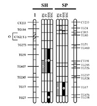
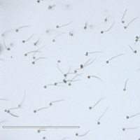
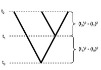
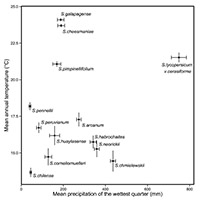
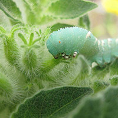
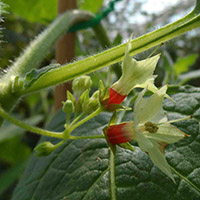

Research themes in the lab
New species evolve when diverging populations accumulate genetic changes that confer ecological differences and, in sexually reproducing organisms, reproductive isolating barriers. We study this process of diversification with a range of research tools and study organisms, and at different levels of biological organization. A long-term goal is to understand the mechanistic — ecological, evolutionary, physiological, and genetic — connections between adaptation and speciation. While there is considerable overlap among our questions and approaches, our research falls into three general areas:
Genetics & evolution of reproductive isolation
For organisms that reproduce sexually, the evolution of reproductive isolation is a key step in the formation of new species. Nonetheless, surprisingly little is known about the origin, accumulation, and underlying genetics of reproductive isolating barriers. We use empirical, theoretical, and comparative approaches to understand these processes. Current research interests include:
Postzygotic isolation

Reproductive isolation that acts after hybrids are formed is thought to be due to deleterious interactions between diverging genomes. We are examining the genetics of postzygotic isolation barriers, especially hybrid sterility, and using these empirical data to test theoretical predictions about the evolution of hybrid incompatibility.
Prezygotic isolation

Barriers that prevent the formation of hybrids between species—either because mating fails to occur or because of mismatched sexual signals after mating—might be particularly important in isolating species that co-occur in nature. We are interested in divergence processes that prevent species from successfully interbreeding, including trait divergence that results from sexual selection and sexual conflict.
Comparative and theoretical analyses

To understand general patterns of speciation, across different scales and biological systems, we also use comparative analyses of reproductive isolation and conceptual and mathematical models of the evolution of isolating barriers.
Population and species differences are often shaped by natural selection and/or selection on traits that increase reproductive competitiveness via sexual selection or conflict. We aim to understand the ecological conditions and genetic changes underlying this adaptive trait variation within and between species, and the role of this variation in driving speciation. Current research interests include:
Adaptation to abiotic variation

We are examining the geographical, environmental, and climatic factors most important for shaping differences within and between species, and the traits and molecular variants associated with adaptive responses to these critical abiotic variables.
Adaptation to biotic interactions

We are interested in the traits that mediate responses to dynamic interactions between species, including defenses against natural enemies and traits that attract and reward mutualists such as pollinators.
Reproductive and
sexually-selected traits

Understanding the ecology and genetics of reproductive traits can potentially illuminate both adaptation and the evolution of species isolation. We aim to understand the evolutionary forces acting on reproductive traits, and the possible consequences of reproductive trait divergence for the evolution of isolating barriers.
One natural way to integrate studies of trait divergence, adaptation, and reproductive isolation is within a comparative genomic framework. Along with our collaborators (Hahn Lab, Haak Lab), we have been generating comparative genomic and expression data across many species in several clades, including Solanum, Jaltomata, and Capsicum. Our goals are to understand local, chromosomal, and genome-wide molecular divergence within and among species (the genomic genealogy of speciation), as well as patterns of evolutionary change at individual loci. In combination with geographical, ecological, and trait mapping information, these data can reveal the specific loci associated with functional abiotic, biotic, and reproductive trait variation, and the evolutionary processes that give rise to this diversity.
We also use a diverse range of study organisms, some of which you can see here.
Indiana University Department of Biology Biology Bldg 325, 1001 East Third Street, Bloomington, IN 47405-7005